건설재료시험기사 (2017-03-05 기출문제)
1과목: 콘크리트공학
1. 경량골재콘크리트에 대한 설명으로 옳은 것은?
- 내구성이 보통 콘크리트보다 크다.
- 열전도율은 보통 콘크리트보다 작다.
- 탄성계수는 보통 콘크리트의 2배 정도이다.
- 건조수축에 의한 변형이 생기지 않는다.
(정답률: 50%)

2. 콘크리트 진동다지기에서 내부진동기 사용방법의 표준으로 틀린 것은?
- 2층 이상으로 나누어 타설한 경우 상층 콘크리트의 다지기에서 내부진동기는 하층의 큰크리트 속으로 찔러 넣어면 안된다
- 내부진동기의 삽입 간격은 일반적으로 0.5m 이하로 하는 것이 좋다.
- 1개소당 진동시간은 다짐할 때 시멘트 페이스트가 표면 상부로 약간 부상하기까지 한다.
- 내부진동기는 콘크리트를 횡방향으로 이동시킬 목적으로 사용하지 않아야 한다.
(정답률: 84%)
3. 고압증기양생을 실시한 콘크리트에 대한 일반적인 설명으로 틀린 것은?
- 고압증기양생을 실시한 콘크리트는 보통 양생한 콘크리트에 비해 철근의 부착강도가 약 2배 정도 증가된다.
- 고압증기양생을 실시한 콘크리트의 크리프는 크게 감소된다.
- 고압증기양생을 실시한 콘크리트는 황산염에 대한 저항성이 향상된다.
- 고압중기양생을 실시한 콘크리트의 외관은 흰색을 띤다.
(정답률: 82%)
4. 콘크리트 배합설계 시 굵은 골재 최대치수의 선정방법 중 틀린 것은?
- 단면이 큰 구조물인 경우 40㎜를 표준으로 한다.
- 일반적인 구조물의 경우 20㎜ 또는 25㎜를 표준으로 한다.
- 거푸집 양 측면 사이의 최소 거리의 1/3을 초과해서는 안 된다.
- 개별철근, 다발철근, 긴장재 또는 덕트 사이 최소 순간격의 3/4을 초과해서는 안 된다.
(정답률: 65%)
5. 30회 이상의 시험실적으로부터 구한 콘크리트 압축강도의 표준편차가 5MPa 이고, 설계기준 압축강도가 40MPa인 경우 배합강도는?
- 46.7MPa
- 47.7MPa
- 48.2MPa
- 50.0MPa
(정답률: 65%)
6. 품질이 동일한 콘크리트 공시체의 압축강도 시험에 대한 설명으로 옳은 것은? (단, 공시체의 높이 : H, 공시체의 지름 : D)
- 품질이 동일한 콘크리트는 공시체의 모양, 크기 및 재하방법이 달라져도 압축강도가 항상 같다.
- H/D비가 작으면 압축강도는 작다.
- H/D비가 일정해도 공시체의 치수가 커지면 압축강도는 작아진다.
- H/D비가 2.0에서 압축강도는 최대값을 나타낸다.
(정답률: 61%)
7. 프리스트레스트 콘크리트에서 프리스트레싱할 때의 일반적인 사항으로 틀린 것은?
- 간장재는 이것을 구성하는 각각의 PS강재에 소정의 인장력이 주어지도록 긴장하여야 한다.
- 긴장재를 긴장할 때 정확한 인장력이 주어지도록 하기 위해 인장력을 설계값 이상으로 주었다가 다시 설계값으로 낮추는 방법으로 시공하여야 한다.
- 긴장재에 대해 순차적으로 프리스트레싱을 실시할 경우는 각 단계에 있어서 콘크리트에 유해한 응력이 생기지 않도록 하여야 한다.
- 프리텐션 방식의 경우 긴장재에 주는 인장력은 고정장치의 활동에 의한 손실을 고려하여야 한다.
(정답률: 81%)
8. 다음 중 블리딩(Bleeding) 방지법으로 옳지 않은 것은?
- 단위수량이 적은 된비빔의 콘크리트로 한다.
- 단위시멘트량을 적게 한다.
- 혼화제 중에서 AE제나 감수제를 사용한다.
- 골재의 입도분포가 양호한 것을 사용한다.
(정답률: 69%)
9. 시방배합결과 물 180㎏/m3, 잔골재 650㎏/m3, 굵은 골재 1000㎏/m3을 얻었다. 잔골재의 흡수율이 2%, 표면수율이 3%라고 하면 현장배합상의 단위 잔골재량은?
- 637.0 kg/m3
- 656.5 kg/m3
- 663.0kg/m3
- 669.5kg/m3
(정답률: 42%)
10. 일반적인 수중콘크리트에 대한 설명으로 틀린 것은?
- 물-결합재비 50%이하, 단위시멘트량은 370kg/m3 이상을 표준으로 한다.
- 잔골재율을 적절한 범위 내에서 크게 하여 점성이 풍부한 배합으로 할 필요가 있다.
- 수중콘크리트의 치기는 물을 정지시킨 정수 중에서 치는 것이 좋다.
- 강제식 배치믹서를 사용하여 비비는 경우 콘크리트가 드럼내부에 부착되어 충분히 비벼지지 못할 경우가 있기 때문에 믹서는 가경식 배치믹서를 사용하여야 한다.
(정답률: 70%)
11. 콘크리트의 받아들이기 품질검사에 대한 설명으로 틀린 것은?
- 콘크리트의 받아들이기 검사는 콘크리트가 타설된 이후에 실시하는 것을 원칙으로 한다.
- 굳지 않은 콘크리트의 상태는 외관 관찰에 의하며, 콘크리트 타설 개시 및 타설 중 수시로 검사하여야 한다.
- 바다 잔골재를 사용한 콘크리트의 염소이온량은 1일에 2회 시험하여야 한다.
- 강도검사는 콘크리트의 배합검사를 실시하는 것을 표준으로 한다.
(정답률: 79%)
12. 포스트텐션 방식의 프리스트레스트 콘크리트에서 긴장재의 정착장치로 일반적으로 사용되는 방법이 아닌 것은?
- PS강봉을 갈고리로 만들어 정착시키는 방법
- 반지름 방향 또는 원주 방향의 쐐기 작용을 이용한 방법
- PS강봉의 단부에 나사 전조가공을 하여 너트로 정착하는 방법
- PS강봉의 단부에 헤딩(heading)가공을 하여 가공된 강재 머리에 의하여 정착하는 방법
(정답률: 54%)
13. 콘크리트의 재료분리 현상을 줄이기 위한 사항으로 틀린 것은?
- 잔골재율을 증가시킨다.
- 물-시멘트비를 작게 한다.
- 굵은 골재를 많이 사용한다.
- 포졸란을 적당량 혼합한다.
(정답률: 70%)
14. 프리플레이스트 콘크리트에 대한 설명으로 틀린 것은?
- 잔골재의 조립률은 1.4~2.2 범위로 한다.
- 굵은 골재의 최소 치수는 15mm이상으로 하여야 한다.
- 프리플레이스트 콘크리트의 강도는 원칙적으로 재령 14일의 조기재령의 압축강도를 기준으로 한다.
- 굵은 골재의 최대 치수와 최소 치수의 차이를 적게 하면 굵은 골재의 실적률이 적어지고 주입모르타르의 소요량이 많아진다.
(정답률: 51%)
15. 콘크리트의 탄산화에 대한 설명으로 틀린 것은?
- 탄산화는 콘크리트의 내부에서 발생하여 콘크리트의 표면으로 진행된다.
- 콘크리트의 탄산화깊이 및 탄산화속도는 구조물의 건전도 및 잔여수명을 예측하는데 중요한 요소가 된다.
- 탄산화에 의한 물리적 열화는 콘크리트 내부 철근의 녹슬음에 의한 것이 가장 크다.
- 탄산화 깊이를 조사하기 위한 시약으로는 페놀프탈레인 용액이 사용된다.
(정답률: 68%)
16. 아래 표의 조건과 같을 경우 콘크리트의 압축강도(fcu)를 시험하여 거푸집널의 해체시기를 결정하고자 한다. 콘크리트의 압축강도(fcu)가 몇 MPa 이상인 경우 거푸집널을 해체할 수 있는가?
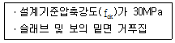
- 5MPa
- 10MPa
- 14MPa
- 20MPa
(정답률: 69%)
17. 섬유보강 콘크리트에 대한 설명으로 틀린 것은?
- 강섬유보강 콘크리트의 경우, 소요단위수량은 강섬유의 용적 혼입률 1% 증가에 대하여 20㎏/m3 정도 증가한다.
- 섬유보강으로 인해 인장강도, 휨강도, 전단강도 및 인성은 증대되지만, 압축강도는 그다지 변화하지 않는다.
- 강제식 믹서를 이용한 경우, 섬유보강 콘크리트의 비비기 부하는 일반 콘크리트 비해 2~4배 커지는 수가 있다.
- 섬유혼입률은 섬유보강 콘크리트 1m3중에 점유하는 섬유의 질량백분율(%)로서 보통 0.5~2.0% 정도이다.
(정답률: 32%)
18. 시중콘크리트에 대한 설명으로 틀린 것은?
- 일반적으로는 기온 10℃의 상승에 대하여 단위수량은 2~5% 감소하므로 단위수량에 비례하여 단위시멘트량의 감소를 검토하여야 한다.
- 하루 평균기온이 25℃를 초과하는 경우 서중콘크리트로 시공한다.
- 콘크리트를 타설하기 전에 지반, 거푸집 등을 습윤상태로 유지하기 위해서 살수 또는 덮개 등의 적절한 조치를 취해야 한다.
- 콘크리트는 비빈 후 즉시 타설하여야 하며, 일반적인 대책을 강구한 경우라도 1.5시간 이내에 타설하여야 한다.
(정답률: 56%)
19. 콘크리트의 시공이음에 대한 설명으로 틀린 것은?
- 시공이음은 부재의 압축력이 작용하는 방향과 직각이 되도록 하는 것이 원칙이다.
- 시공이음을 계획할 때는 온도 및 건조수축 등에 의한 균열의 발생도 고려해야 한다.
- 바닥틀과 일체로 된 기둥 또는 벽의 시공이음은 바닥틀과의 경계 부근에 설치하는 것이 좋다.
- 시공이음은 될 수 있는 대로 전단력이 큰 위치에 설치해야 한다.
(정답률: 65%)
20. 콘크리트 강도에 영향을 주는 요소가 아닌 것은?
- 골재의 입도
- 양생조건
- 물-시멘트 비
- 거푸집의 형태와 크기
(정답률: 86%)
2과목: 건설시공 및 관리
21. PERT와 CPM의 비교 설명 중 PERT에 관련된 내용이 아닌 것은?
- 공비절감을 주목적으로 한다.
- 비반복사업을 대상으로 한다.
- 신규사업을 대상으로 한다.
- 3점견적법으로 공기를 추정한다.
(정답률: 64%)
22. 사장교를 케이블 형상에 따라 분류할 때 여기에 속하지 않는 것은?
- 방사(rediating)형
- 하프(harp)형
- 타이드(tied)형
- 팬(fan)형
(정답률: 66%)
23. 아래의 직업 조건하에서 백호로 굴착 상차작업을 하려고 할 때 시간당 작업량은 본바닥 토량으로 얼마인가?
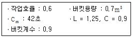
- 23.3m3/hr
- 25.9m3/hr
- 29.2m3/hr
- 40.5m3/hr
(정답률: 54%)
24. 아스팔트 포장 시공 단계에서 보조기층의 보호 및 수분의 모관상승을 차단하고 아스팔트 혼합물과의 접착성을 좋게하기 위하여 실시하는 것은 무엇인가?
- 텍 코우트(tack coat)
- 프라임 코우트(prime coat)
- 실 코우트(seal coat)
- 컬러 코우트(color coat)
(정답률: 73%)
25. 오픈 케이슨 기초의 특징에 대한 일반적인 설명으로 틀린 것은?
- 기계설비가 비교적 간단하다.
- 다른 케이슨 기초와 비교하여 공사비가 싸다.
- 침하 깊이의 제한을 받지 않는다.
- 굴착 시 히빙이나 보일링 현상의 우려가 없다.
(정답률: 54%)
26. 다음 중 연약 점성토 지반의 개량공법으로 적합하지 않은 것은?
- 침투압(MAIS) 공법
- 프리로딩(pre-loading) 공법
- 샌드드레인(sand drain) 공법
- 바이브로폴로테이션(vibrofloation) 공법
(정답률: 69%)
27. 다음과 같은 절토공사에서 단면적은 얼마인가?
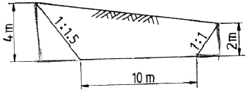
- 32m2
- 40m2
- 51m2
- 55m2
(정답률: 59%)
28. 다져진 토량 37800m3를 성토하는데 흐트러진 토량 30000m3가 있다. 이 때, 부족토량은 자연상태 토량(m3)으로 얼마인가? (단, 토량변화율 L = 1.25, C = 0.9)
- 22000m3
- 18000m3
- 15000m3
- 11000m3
(정답률: 73%)
29. 겨울철 동상에 의한 노면의 균열과 평탄성의 약화와 더불어 초봄의 노상지지력의 저하로 인한 포장의 구조파괴를 동결융해작용이라고 한다. 이는 3가지 조건을 동시에 만족하여야 한다. 이는 3가지 조건을 동시에 만족하여야 하는데 그 중 관계가 없는 것은?
- 지반의 토질이 동상을 일으키기 쉬울 때
- 동상을 일으키기에 필요한 물의 보급이 충분할 때
- 0℃ 이상의 기온일 때
- 보관상승고가 동결심도 보다 클 때
(정답률: 64%)
30. 교량에서 좌우의 주형을 연결하여 구조물의 횡방향 지지, 교량 단면형상의 유지, 강성의 확보, 황하중의 받침부로의 원활한 전달 등을 위해서 설치하는 것은?
- 교좌
- 바닥판
- 바닥틀
- 브레이싱
(정답률: 69%)
31. 터널 굴착 방식의 NATM의 시공순서로 올바르게 된 것은?
- 발파→천공→록볼트→숏크리트→버력처리→환기
- 발파→천공→숏크리트→록볼트→버력처리→환기
- 천공→발파→환기→버력처리→숏크리트→록볼트
- 천공→버력처리→발파→환기→록볼트→숏크리트
(정답률: 69%)
32. 다음 발파공 중 심빼기 발파공이 아닌 것은?
- 번 컷
- 스윙 컷
- 피라미드 컷
- 벤치 컷
(정답률: 56%)
33. 15t 덤프트럭으로 토사를 운반하고자 한다. 적재장비로 버킷용량이 2.5m3인 백호를 사용하는 경우 트럭 1대를 적재하는데 소요되는 시간은? (단, 흙의 단위중량은 1.5t/m3, L = 1.25, 버킷계수 K = 0.85, 백호의 사이클타임 = 25sec, 작업효율 E = 0.75이다.)
- 3.33min
- 3.89min
- 4.37min
- 4.82min
(정답률: 42%)
34. 토공에 대한 설명 중 틀린 것은?
- 시공기면은 현재 공사를 하고 있는 면을 말한다.
- 토공은 굴착, 신기, 운반, 성토(사토) 등의 4공정으로 이루어진다.
- 준설은 수저의 토사 등을 굴착하는 작업을 말한다.
- 법면은 비탈면으로 성토, 절토의 사면을 말한다.
(정답률: 74%)
35. 말뚝기초의 부마찰력 감소방법으로 틀린 것은?
- 표면적이 작은 말뚝을 사용하는 방법
- 단면이 하단으로 가면서 증가하는 말뚝을 사용하는 방법
- 선행하중을 기하여 지반침하를 미리 감소하는 방법
- 말뚝직경보다 약간 큰 케이싱을 박아서 부마찰력을 차단하는 방법
(정답률: 59%)
36. 옹벽의 안정상 수평 저항력을 증가시키기 위한 방법으로 가장 유리한 것은?
- 옹벽의 비탈경사를 크게 한다.
- 옹벽의 저판 밑에 돌기물(Key)을 만든다.
- 옹벽의 전면에 Apron을 설치한다.
- 배면의 본바닥에 앵커 타이(Anchor tie)나 앵커벽을 설치한다.
(정답률: 74%)
37. 아래의 표에서 설명하는 여수로(spill way)는?
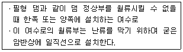
- 슈트식 여수로
- 그롤리 홀 여수로
- 측수로 여수로
- 사이펀 여수로
(정답률: 70%)
38. 다음 중 품질관리의 순환과정으로 옳은 것은?
- 계획 → 실시 → 검토 → 조치
- 실시 → 계획 → 검토 → 조치
- 계획 → 검토 → 실시 → 조치
- 실시 → 계획 → 조치 → 검토
(정답률: 70%)
39. 대형기계로 회전대에 달린 Boom을 사용하여 버킷을 체인의 힘으로 전후 이동시켜서 작업이 곤란한 장소 또는 좁은 곳의 얕은 굴착을 할 경우 적당한 장비는?
- 트랙터 쇼벨
- 리사이클플랜트
- 벨트콘베이어
- 스키머스코우프
(정답률: 58%)
40. 다음 중 보일링 현상이 가장 잘 생기는 지반은?
- 사질지반
- 사질점토지반
- 보통토
- 점토질지반
(정답률: 63%)
3과목: 건설재료 및 시험
41. 포틀랜드 시멘트의 주성분 비율 중 수경률(H.M, Hydraulic Modulus)에 대한 설명으로 틀린 것은?
- 수경률은 CaO 성분이 높을 경우 커진다.
- 수경률은 다른 성분이 일정할 경우 석고량이 많을 경우 커진다.
- 수경률이 크면 초기강도가 커진다.
- 수경률이 크면 수화열이 큰 시멘트가 생긴다.
(정답률: 59%)
42. 목재 시험편의 중량을 측정한 결과 건조전의 중량이 30g, 절대건조 중량이 25g 일 때 이 목재의 함수율은?
- 10%
- 15%
- 20%
- 25%
(정답률: 68%)
43. 아스팔트 침입도 시험에서 표준침의 관입량이 8.1㎜이었다. 이 아스팔트의 침입도는 얼마인가?
- 0.081
- 0.81
- 8.1
- 81
(정답률: 61%)
44. 커트백(Cut back) 아스팔트에 대한 설명으로 틀린 것은?
- 대부분의 도로포장에 사용된다.
- 경화 속도 순서로 나누면 RC＞MC＞SC 순이다.
- 커트백 아스팔트를 사용할 때는 가열하여 사용하여야 한다.
- 침입도 60~120 정도의 연한 스트레이트 아스팔트에 용제를 가해 유동성을 좋게 한 것이다.
(정답률: 59%)
45. 상온에서 액체이며 동해를 입히기 가장 쉬운 폭약은?
- 다이너마이트
- 칼릿
- 니트로글리세린
- 질산암모늄계 폭약
(정답률: 60%)
46. 아래 표의 시험기는 암석의 어떤 특성을 파악하기 위한 것인가?
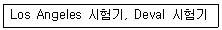
- 반발경도
- 압입경도
- 마모저항성
- 압축강도
(정답률: 65%)
47. 폴리머시멘트 콘크리트에 대한 설명으로 틀린 것은?
- 방수성, 불투수성이 양호하다.
- 타설 후, 경화 중에 물을 뿌려주는 등의 표면 보호조치가 필요하다.
- 인장, 휨, 부착강도는 커지나, 압축강도는 일반 시멘트 콘크리트에 비해 감소하거나 비슷한 값을 보인다.
- 내충격성 및 내마모성이 좋다.
(정답률: 47%)
48. 석재의 분류방법에서 수성암에 속하지 않는 것은?
- 섬록암
- 석회암
- 사암
- 응회암
(정답률: 40%)
49. 아스팔트 시험에 대한 설명으로 틀린 것은?
- 아스팔트 침입도 시험에서 침입도 측정값의 평균값이 50.0 미만인 경우 침입도 측정값의 허용차는 2.0으로 규정하고 있다.
- 환구법에 의한 아스팔트 연화점시험을 환에 주입하고 4시간 이내에 시험을 종료하여야 한다.
- 환구법에 의한 아스팔트 연화점시험에서 시료를 규정조건에 가열하였을 때, 시료가 연화되기 시작하여 규정된 거리(25.4㎜)로 쳐졌을 때의 온도를 연화점이라고 한다.
- 아스팔트의 신도시험에서 2회 측정의 평균값을 0.5㎝ 단위로 끝맺음하고 신도로 결정한다.
(정답률: 45%)
50. 일반적으로 콘크리트용 골재에 대한 설명으로 틀린 것은?
- 잔골재의 절대건조밀도는 0.0025g/mm3이상의 값을 표준으로 한다.
- 잔골재의 흡수율은 5% 이하의 값을 표준으로 한다.
- 굵은 골재의 안정성은 황산나트륨으로 5회 시험을 하여 평가한다.
- 굵은 골재의 절대건조밀도는 0.0025g/mm3 이상의 값을 표준으로 한다.
(정답률: 61%)
51. 일반구조용 압연강재를 SS330, SS400, SS490 등과 같이 표현하고 있다. 이 때 “SS400"에서 400이란 무엇에 대한 최소 기준인가?
- 항복점(N/mm2)
- 항복점(Kg/mm2)
- 인장강도(N/mm2)
- 연신율(%)
(정답률: 60%)
52. 재료의 성질과 관련된 용어의 설명으로 틀린 것은?
- 강성(rigidity) : 큰 외력에 의해서도 파괴되지 않는 재료를 강성이 큰 재료라고 하며, 강도와 관계가 있으나, 탄성계수와는 관계가 없다.
- 연성(ductility) : 재료에 인장력을 주어 가늘고 길게 늘어나게 할 수 있는 재료를 연성이 풍부하다고 한다.
- 취성(brittleness) : 재료가 작은 변형에도 파괴가 되는 성질을 취성이라고 한다.
- 인성(toughness) : 재료가 하중을 받아 파괴될 때까지의 에너지 흡수능력으로 나타낸다.
(정답률: 61%)
53. 특수시멘트 중 벨라이트시멘트에 대한 설명으로 틀린 것은?
- 수화열이 적어 대규모의 댐이나 고층건물들과 같은 대형 구조물공사에 적합하다.
- 보통 포틀랜드시멘트를 사용한 콘크리트와 동일한 유동성을 확보하기 위해서 단위수량 및 AE제 사용량의 증가가 필요하다.
- 장기강도가 높고 내구성이 좋다.
- 고분말도형(고강도형)과 저분말도형(저발열형)으로 나누어 공업적으로 생산된다.
(정답률: 54%)
54. AE제를 사용한 콘크리트의 특성을 설명한 것으로 옳지 않은 것은?
- 동결융해에 대한 저항성이 크다.
- 철근과의 부착강도가 작다.
- 콘크리트의 워커빌리티를 개선하는 데 효과가 있다.
- 콘크리트 블리딩 현상이 증가된다.
(정답률: 56%)
55. 굵은 골재의 체가름 시험 결과 각 체의 누적 잔류량이 다음의 표와 같을 때 조립률은 얼마인가?
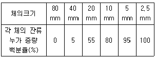
- 3.35
- 5.58
- 7.35
- 8.58
(정답률: 58%)
56. 강(鋼)의 조직을 미세화하고 균질의 조직으로 만들며 강의 내부 변형 및 응력을 제거하기 위하여 변태점 이상의 높은 온도로 가열한 후 대기중에서 냉각시키는 열처리 방법은?
- 불림(normalizing)
- 풀림(annealing)
- 뜨임질(tempering)
- 담금질(quenching)
(정답률: 51%)
57. 혼화재 중 대표적인 포졸란의 일종으로서, 화력발전소 등에서 분탄을 연소시킬 때 불연 부분이 융융상태로 부유한 것을 냉각 고화시켜 채취한 미분탄재를 무엇이라고 하는가?
- 플라이애시
- 고로슬래그
- 실리카 퓸
- 소성점토
(정답률: 53%)
58. 응결 촉진제로서 염화칼슘을 사용할 경우 콘크리트의 성질에 미치는 영향에 대한 설명으로 틀린 것은?
- 보통 콘크리트보다 초기강도는 증가하나 장기강도는 감소한다.
- 콘크리트의 건조수축과 크리프가 커진다.
- 황산염에 대한 저항성과 내구성이 감소한다.
- 알칼리 골재반응을 약화시키나 철근의 부식을 억제한다.
(정답률: 52%)
59. 토목섬유재료인 EPS 블록을 고분자 재료 중 어떤 원료를 주로 사용하는가?
- 폴리에틸렌
- 폴리스틸렌
- 폴리아미드
- 폴리프로필렌
(정답률: 48%)
60. 일반적으로 알루미늄 분말을 사용하여 프리플레이스트 콘크리트용 그라우트 또는 건축분야에서 부재의 경량화 등의 용도로 사용되는 혼화제는?
- AE제
- 방수제
- 방청제
- 발포제
(정답률: 58%)
4과목: 토질 및 기초
61. 연속 기초에 대한 Terzaghi의 극한지지력 공식은 qu = cㆍNc+0.5ㆍγ1ㆍBㆍNγ+γ2ㆍDfㆍNq 로 나타낼 수있다. 아래 그림과 같은 경우 극한지지력 공식의 두 번째 항의 단위중량 γ1의 값은?
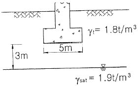
- 1.44t/m3
- 1.60t/m3
- 1.74t/m3
- 1.82t/m3
(정답률: 40%)
62. 아래 그림과 같은 무한 사면이 있다. 흙과 암반의 경계면에서 흙의 강도정수 =1.8t/m2, ø=25°이고, 흙의 단위중량 γ=1.9t/m3인 경우 경계면에서 활동에 대한 안전율을 구하면?
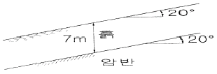
- 1.55
- 1.60
- 1.65
- 1.70
(정답률: 36%)
63. 흐트러지지 않은 시료를 이용하여 액성한계 40%, 소성한계 22.3%를 얻었다. 정규압밀 점토의 압축지수(Cc) 값을 Terzaghi와 Peck이 발표한 경험식에 의해 구하면?
- 0.25
- 0.27
- 0.30
- 0.35
(정답률: 51%)
64. 말뚝기초의 지반거동에 관한 설명으로 틀린 것은?
- 연약지반상에 타입되어 지반이 먼저 변형하고 그 결과 말뚝이 저항하는 말뚝을 주동말뚝이라 한다.
- 말뚝에 작용한 하중은 말뚝주변의 마찰력과 말뚝 선단의 지지력에 의하여 주변 지반에 전달된다.
- 기성말뚝을 타입하면 전단파괴를 일으키며 말뚝 주위의 지반은 교란된다.
- 말뚝 타입 후 지지력의 증가 또는 감소현상을 시간효과(time effect)라 한다.
(정답률: 56%)
65. 흙의 다짐에 관한 설명 중 옳지 않은 것은?
- 조립토는 세립토보다 최적함수비가 작다.
- 최대 건조단위중량이 큰 흙일수록 최적함수비는 작은 것이 보통이다.
- 점성토 지반을 다질 때는 진동 로울러로 다지는 것이 유리하다.
- 일반적으로 다짐 에너지를 크게 할수록 최대 건조단위중량은 커지고 최적함수비는 줄어든다.
(정답률: 56%)
66. 흐트러지지 않은 연약한 점토시료를 채취하여 일축압축시험을 실시하였다. 공시체의 직경이 35㎜, 높이가 100㎜이고 파괴 시의 하중계의 읽음값이 2㎏, 축방향의 변형량이 12㎜일 때 이 시료의 전단강도는?
- 0.04Kg/cm2
- 0.06Kg/cm2
- 0.09Kg/cm2
- 0.12Kg/cm2
(정답률: 38%)
67. 정규압밀점토에 대하여 구속응력 1㎏/cm2로 압밀배 수 시험한 결과 파괴 시 축차응력이 2㎏/cm2이었다. 이 흙의 내부 마찰각은?
- 20°
- 25°
- 30°
- 40°
(정답률: 58%)
68. 침투유량(q) 및 B점에서의 간극수압(uB)을 구한 값으로 옳은 것은? (단 투수층의 투수계수는 3×10-1㎝/sec이다.)
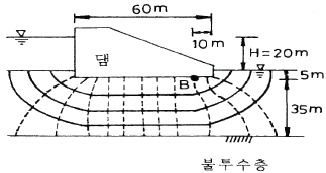
- q = 100cm3/sec/cm, uB = 0.5kg/cm2
- q = 100cm3/sec/cm, uB = 1.0kg/cm2
- q = 200cm3/sec/cm, uB = 0.5kg/cm2
- q = 200cm3/sec/cm, uB = 1.0kg/cm2
(정답률: 55%)
69. 표준관입시험에 관한 설명 중 옳지 않은 것은?
- 표준관입시험의 N값으로 모래지반의 상대밀도를 추정할 수 있다.
- N값으로 점토지반의 연경도에 관한 추정이 가능하다.
- 지층의 변화를 판단할 수 있는 시료를 얻을 수있다.
- 모래지반에 대해서도 흐트러지지 않은 시료를 얻을 수 있다.
(정답률: 57%)
70. 지반내 응력에 대한 다음 설명 중 틀린 것은?
- 전응력이 커지는 크기만큼 간극수압이 커지면 유효응력은 변화 없다.
- 정지토압계수 K0는 1보다 클 수 없다.
- 지표면에 가해진 하중에 의해 지중에 발생하는 연직응력의 증가량은 깊이가 깊어지면서 감소한다.
- 유효응력이 전응력보다 클 수도 있다.
(정답률: 54%)
71. 간극비 e1=0.80인 어떤 모래의 투수계수 k1=8.5×10-2㎝/sec 일 때 이 모래를 다져서 간극비를 e2=0.57로 하면 투수계수 k2는?
- 8.5×10-3㎝/sec
- 3.5×10-2㎝/sec
- 8.1×10-2㎝/sec
- 4.1×10-1㎝/sec
(정답률: 41%)
72. 아래의 표와 같은 조건에서 군지수는?
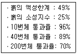
- 9
- 12
- 15
- 18
(정답률: 38%)
73. 사질토 지반에서 직경 30㎝의 평판재하시험 결과 30t/m2의 압력이 작용할 때 침하량이 10㎜라면, 직경, 1.5m의 실제 기초에 30t/m2의 하중이 작용할 때 침하량의 크기는?
- 14㎜
- 25㎜
- 28㎜
- 35㎜
(정답률: 50%)
74. 흙막이 벽체의 지지없이 굴착 가능한 한계굴착깊이에 대한 설명으로 옳지 않은 것은?
- 흙의 내부마찰각이 증가할수록 한계굴착깊이는 증가한다.
- 흙의 단위중량이 증가할수록 한계굴착깊이는 증가한다.
- 흙의 점착력이 증가할수록 한계굴착깊이는 증가한다.
- 인장응력이 발생되는 깊이를 인장균열깊이라고 하며, 보통 한계굴착깊이는 인장균열깊이의 2배 정도이다.
(정답률: 50%)
75. 아래 그림과 같은 점성토 지반의 토질시험결과 내부마찰각(ø)은 30°, 점착력(c)은 1.5t/m2일 A점의 전단강도는?
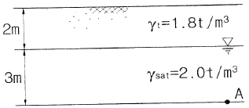
- 3.84t/m2
- 4.27t/m2
- 4.83t/m2
- 5.31t/m2
(정답률: 46%)
76. 중심간격이 2.0m, 지름이 40㎝인 말뚝을 가로 4개, 세로 5개씩 전체 20개의 말뚝을 박았다. 말뚝 한 개의 허용지지력이 15ton이라면 이 군항의 허용지지력은 약 얼마인가? (단, 군말뚝의 효율은 Converse-Labarre 공식을 사용)
- 450.0t
- 300.0t
- 241.5t
- 114.5t
(정답률: 52%)
77. 어떤 흙의 습윤 단위중량이 2.0t/m3, 함수비 20%, 비중 Gs=2.7인 경우 포화도는 얼마인가?
- 84.1%
- 87.1%
- 95.6%
- 98.5%
(정답률: 39%)
78. 다음의 연약지반개량공법에서 일시적인 개량공법은?
- Well point 공법
- 치환공법
- paper drain공법
- sand compaction pile 공법
(정답률: 63%)
79. 유선망은 이론상 정사각형으로 이루어진다. 동수경사가 가장 큰 곳은?
- 어느 곳이든 동일함
- 땅속 제일 깊은 곳
- 정사각형이 가장 큰 곳
- 정사각형이 가장 작은 곳
(정답률: 61%)
80. 베인전단시험(vane shear test)에 대한 설명으로 옳지 않은 것은?
- 베인전단시험으로부터 흙의 내부마찰각을 측정할 수있다.
- 현장 원위치 시험의 일종으로 점토의 비배수전단강도를 구할 수 있다.
- 십자형의 베인(vane)을 땅속에 압입한 후, 회전모멘트를 가해서 흙이 원통형으로 전단파괴될 때 저항모멘트를 구함으로써 비배수 전단강도를 측정하게 된다.
- 연약점토지반에 적용된다.
(정답률: 50%)